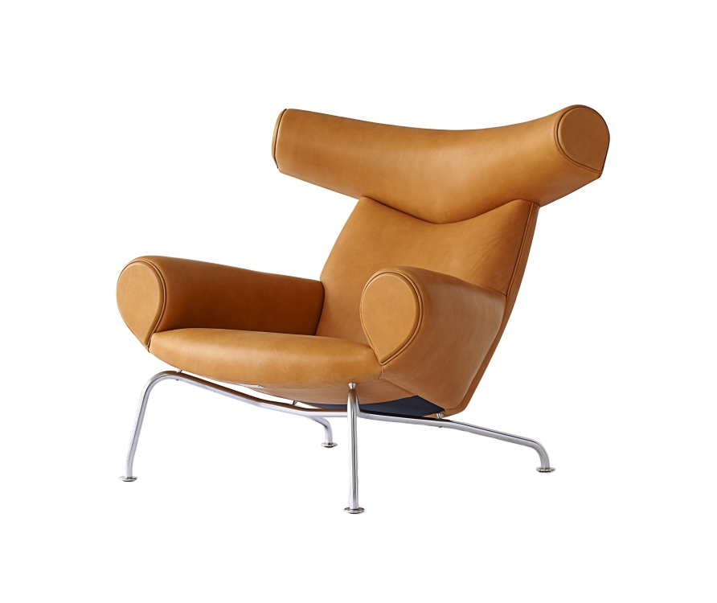

Ox Chair
Кресло – мировой рекордсмен по количеству ручного труда, затраченного на его производство

Подробное описание товара
Икона современного скандинавского дизайна — кресло OX Chair из лимитированной серии (№26). Выполнено в уникальной по качеству и цвету кожаной обивке в честь 100-летия дизайнера Ханса Вегнера, который его создал.
Это кресло считается мировым рекордсменом по количеству ручного труда, затраченного на его производства. Только на сборку его деревянного внутреннего каркаса мастер тратит 8 часов своего труда.
Кстати, в кресле ОХ появляется главный злодей в Остин Пауэрсе.
Характеристики товара
| Производитель | Стиль | Материалы | Каркас | Ножки | Ширина, см | Высота, см | Глубина, см | Страна |
|---|---|---|---|---|---|---|---|---|
| Erik Jorgensen | Современный дизайн | натуральная кожа | дерево | нержавеющая сталь | 90 | 90 | 99 | Дания |
Оставьте контактные данные, чтобы мы смогли с Вами связаться и обсудить условия покупки либо просмотра предмета.
© Все права защены